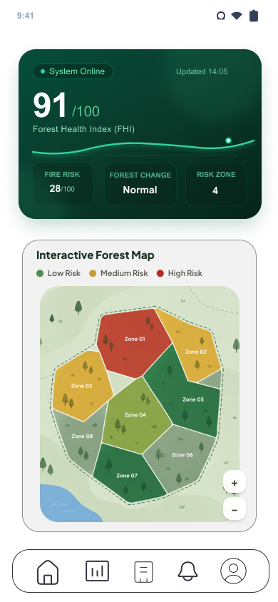
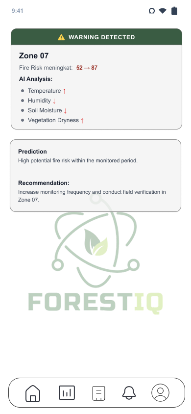
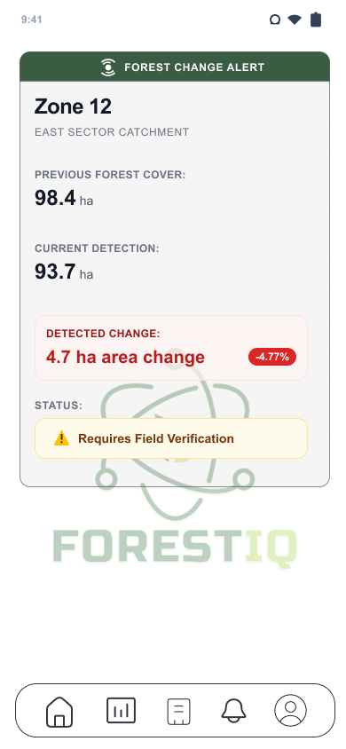
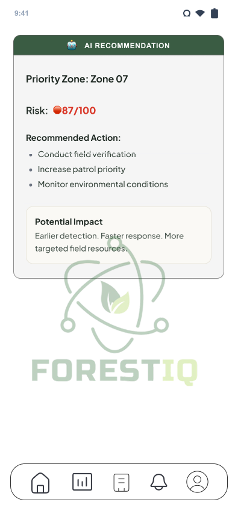
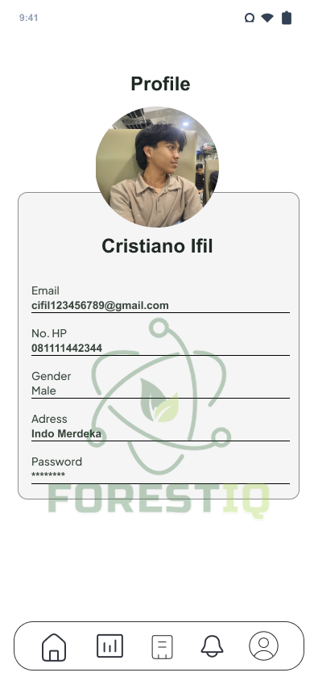

Beralih Dari Pemantauan Reaktif Menuju Perlindungan Hutan Prediktif
Mengintegrasikan sensor IoT (suhu, asap, api, kelembapan, kelembapan tanah) dan data satelit dengan AI untuk mendeteksi anomali mikroklimat, memprediksi risiko karhutla secara dini, serta menyajikan rekomendasi tindakan preventif yang terukur.



Didukung & Berkolaborasi Dengan
FORESTIQ hadir sebagai platform forest intelligence berbasis Business-to-Business (B2B) SaaS untuk menjawab lonjakan kebakaran hutan dan lahan serta keterbatasan observasi lapangan manual. Mengintegrasikan sensor IoT lapangan (suhu, asap, api, kelembapan tanah) dengan citra satelit dan analitik kecerdasan buatan, FORESTIQ memprediksi titik bahaya sebelum kerusakan meluas.
Dirancang khusus untuk menghadirkan kapabilitas menyeluruh dari pengumpulan data sensor mikroklimat hingga rekomendasi mitigasi taktis di lapangan.
Pemantauan kondisi mikroklimat hutan secara berkelanjutan melalui sensor IoT yang memonitor suhu, partikel asap, titik api, kelembapan udara, dan kelembapan tanah pada titik-titik strategis kawasan.
📡 Multi-Sensor IoTModel machine learning menganalisis data historis dan dinamika lingkungan untuk memprediksi probabilitas risiko karhutla serta kerentanan vegetasi sebelum percikan api pertama muncul.
🤖 Algoritma AINotifikasi otomatis seketika melalui aplikasi, dashboard, maupun SMS kepada tim respons saat terdeteksi lonjakan suhu abnormal, penurunan drastis kelembapan, atau indikasi risiko tinggi.
⚡ Notifikasi KilatMendeteksi anomali lingkungan, deforestasi ilegal, perubahan tutupan kanopi (seperti deteksi kehilangan 4,7 ha di Zona 12), serta kekeringan ekstrim antar sektor secara presisi.
🛰️ Fusi Satelit & SensorDashboard eksekutif dan operasional yang menampilkan Forest Health Score (FHI), Fire Risk Score, peta vektor interaktif zonasi risiko, tren historis, serta indikator mikroklimat mendalam.
📊 Visualisasi AnalitikKecerdasan AI merumuskan langkah perlindungan konkret berdasarkan skala ancaman: memprioritaskan verifikasi lapangan, optimalisasi rute patroli ranger, dan mobilisasi sumber daya tepat sasaran.
🎯 Tindakan TerarahGeser slider parameter lingkungan di bawah untuk melihat bagaimana AI FORESTIQ menghitung Forest Health Index (FHI), mengevaluasi risiko karhutla, dan merumuskan rekomendasi mitigasi secara instan.
Parameter mikroklimat menunjukkan hidrasi kanopi hutan stabil dan suhu lingkungan aman. Pemantauan rutin berkala berjalan normal di seluruh sektor.
Diwujudkan langsung dari desain prototype mobile: nikmati antarmuka intuitif yang dirancang untuk pengelola konsesi hutan dan petugas lapangan.
Layar beranda utama yang memberikan pandangan holistik kondisi hutan secara real-time. Dilengkapi Forest Health Index (FHI 91/100), grafik tren gelombang hidrasi, status anomali lingkungan, serta Peta Vektor Hutan interaktif terbagi atas zonasi risiko (Zone 01 - Zone 08).


Perbandingan kapabilitas teknis antara FORESTIQ, SiPongi+ (KLHK), dan Pano AI berdasarkan riset pasar Bab 2.2 proposal bisnis.
| Parameter Kapabilitas | FORESTIQ | SiPongi+ (KLHK) | Pano AI |
|---|---|---|---|
|
Kecerdasan Buatan (AI)
Model prediktif & identifikasi anomali
|
|||
|
Sensor IoT Lapangan
Suhu, asap, api, kelembapan tanah
|
|||
|
Pemantauan Hutan Real-Time
Update kondisi lingkungan terus menerus 24/7
|
|||
|
Deteksi Kebakaran Aktif
Deteksi saat api menyala di lapangan
|
|||
|
Prediksi Risiko Sebelum Titik Api
Forest foresight sebelum kebakaran muncul
|
|||
|
Rekomendasi Tindakan Preventif
Zonasi prioritas & pengarahan patroli lapangan
|
Model bisnis Software-as-a-Service (SaaS) tahunan disesuaikan dengan luas kawasan hutan, jumlah titik sensor IoT, dan kebutuhan analitik.
Pengelola kawasan skala kecil-menengah yang membutuhkan monitoring dasar.
Pengelola kawasan dengan kebutuhan monitoring & analisis risiko komprehensif.
Perusahaan kehutanan & perkebunan dengan integrasi sistem kustom dan API.
Pengelola kawasan berskala besar, dinas kehutanan, dan korporasi multisektor.
Mencegah pelepasan jutaan ton emisi karbon ke atmosfer melalui pencegahan dini kebakaran hutan dan lahan gambut.
Menjaga keanekaragaman hayati hutan tropis Indonesia, tutupan kanopi alami, serta habitat satwa dari kerusakan permanen.
Mengakselerasi transformasi digital sektor kehutanan nasional melalui adopsi teknologi sensor IoT dan sistem machine learning mutakhir.
Bergabunglah bersama dinas kehutanan, pemegang konsesi HPH/HPHT, dan pengelola konservasi dalam mentransformasi perlindungan hutan menuju era prediktif AI. Konsultasikan kebutuhan pilot project kawasan Anda sekarang.